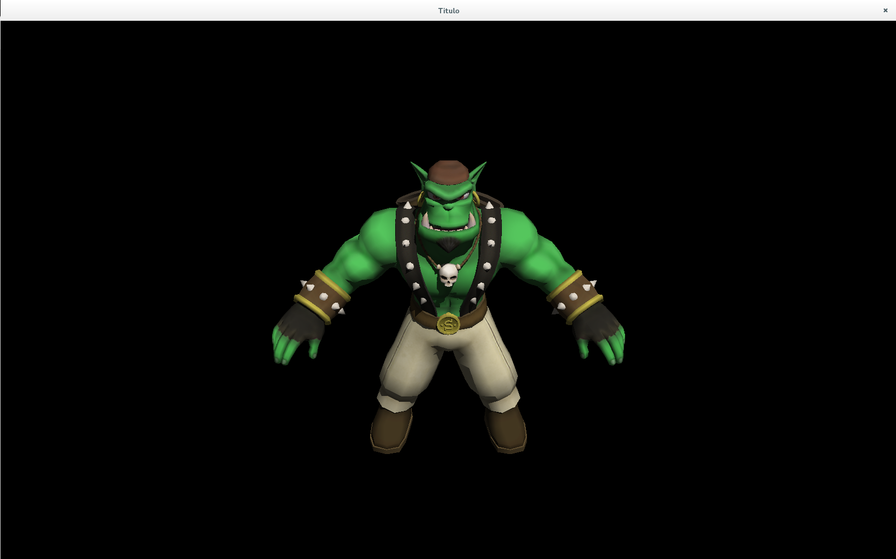

Introducción a Ogre3D
En esta primera entrada hablaremos brevemente de Ogre3D, y de porqué se ha elegido como biblioteca de renderizado. Para ejemplificarlo, se ha creado un pequeño programa usando Ogre en el que se renderiza su mascota, Sinbad, al mismo tiempo que servirá como ejemplo para mostrar la estructura típica de un programa que hace uso de esta biblioteca.
Este post es una adaptación del tutorial que realicé hace unos meses y que podeis encontrar aquí: https://bitbucket.org/IsaacLacoba/intro-ogre/overview
¿Qué es Ogre3D?
Ogre3D(Object-Oriented Graphic Engine) es un motor de renderizado de propósito general creado por Steve Streeting(tambien conocido como Sinbad) distribuido bajo licencia LGPL(repositorio-ogre3d). Fue creado en 2001(entrevista-streeting) con el propósito de crear un componente de renderizado en tiempo real sin hacer asunciones a nivel de aplicación. El objetivo era crear un componente genérico que pudiese ser ampliado a través de plugins. Desde un principio el proyecto se diseñó teniendo en cuenta la mantenibilidad y la facilidad de ampliación.
Ogre3D no fue concebido como un motor de juegos. Se pretendía cubrir el mayor espectro posible,de manera que no sólo sirviese a campos como el de los videojuegos, sino tambien a los de simulación, realidad aumentada, realidad virtual,...y en general, cualquier campo que requiriese del uso de herramientas de renderizado en tiempo real.
Además, el hecho de que se distribuya bajo una licencia de código libre contribuye muchísimo más a su éxito. Esto es así debido a que la comunidad está muy involucrada con el proyecto, cosa que podemos observar en el foro oficial del proyecto, donde se resuelven dudas de desarrollo, se discute el roadmap, etc. En cuanto a las politica de contribuciones, los usuarios de la comunidad pueden colaborar bien realizando pull-request al repositorio oficial con sus parches o bien reportando bugs al Jira del proyecto
Como hemos dicho antes, Ogre3D no es un motor de juego. Esto implica que será el desarrollador quien tenga que encargarse de aspectos como la gestión de eventos de entrada (teclado,ratón,...), físicas, networking, interfaces, etc. En el caso del desarrollo de interfaces existen maneras de crearlas con Ogre a través del uso de overlays; sin embargo, esta aproximación no es lo suficientemente flexible como para crear interfaces avanzadas. Las características principales de Ogre son:
- Mutiplataforma: permite el desarrollo para sistemas Windows, GNU/Linux y Mac OS X.
- Diseño a alto nivel: Ogre3D encapsula llamadas a las librerías gráficas DirectX y OpenGL. Además, hace uso de patrones de diseño: observer para informar de eventos y cambios de estado, singleton para evitar que exista mas de una instancia de cualquier manager, visitor para realizar operaciones sobre un objeto y evitar modificarlo (por ejemplo, en los nodos del grafo de escena), façade para unificar el acceso a operaciones, factory para creación de objetos concretos de interfaces abstractas, etc.
- Grafo de escena: una de las características mas importantes del grafo de escena de Ogre es que desacopla el propio grafo del contenido de la escena, definiendo una arquitectura de pugins. A diferencia de otros motores gráficos, como Irrlicht3D, Blitz3D o Unreal, Ogre no se basa en la herencia como principio de diseño del grafo, sino en la composición. Esto permite expandir el diseño para soportar otros tipos de datos, como audio o elementos de simulación física. En la siguiente figura podemos ver el esquema general del grafo de escena de Ogre.
- Aceleración Hardware: OGRE permite definir el comportamiento de la parte programable de la GPU mediante la definición de Shaders, estando al mismo nivel de otros motores como Unreal o CryEngine.
- Materiales: se definen mediante un sistema de scripts y permiten asignar o cambiar los materiales de los elementos de la escena sin modificar el código fuente.
- Animación: tres tipos(skeletal, morph y pose). La animación y la geometría asociada a los modelos se almacena en un único formato binario optimizado. El proceso mas empleado se basa en la exportación desde la aplicación de modelado y animación 3D a un formato XML (Ogre XML) para convertirlo posteriormente al formato binario optimizado mediante la herramienta de línea de órdenes OgreXMLConverter.
- Composición y Postprocesado.
- Plugins.
- Gestión de Recursos: Ogre ofrece una serie de gestores de recursos, organizados jerárquicamente por grupos.
- Características específicas avanzadas: El motor soporta gran cantidad de características de visualización avanzadas, tales como sombras dinámicas (basadas en diversas técnicas de cálculo), sistemas de partículas, animación basada en esqueletos y de vértices, y un largo etcétera. OGRE soporta además el uso de otras bibliotecas auxiliares mediante plugins y conectores. Entre los más utilizados cabe destacar las bibliotecas de simulación física ODE, el soporte del metaformato Collada, o la reproducción de streaming de vídeo con Theora.
Veamos algo de código
El código fuente del ejemplo que vamos a estudiar lo podemos encontrar en el siguiente repositorio: https://bitbucket.org/IsaacLacoba/intro-ogre/overview.
Se ha creado un ¡Hola Mundo! en Ogre3D con la intención de que fuese lo más sencillo posible. Por esta razón, lo único que hace el ejemplo es renderizar la mascota de Ogre, Sinbad. En la wiki del proyecto Ogre hay una colección muy interesante de tutoriales que es recomendable que el lector interesado estudie. En los listados de código, intentaremos mostrar únicamente el código que se añade en cada paso.
Pero antes de empezar, vamos a explicar como instalar Ogre3D en un sistema operativo GNU/Linux. Consulta este tutorial para saber como instalar Ogre3D en un sistema Microsoft Windows.
Instalación
En distribuciones de GNU/Linux, la instalación de Ogre3D pasa por instalar los siguientes paquetes:
# apt-get update apt-get install libogre-1.8.0 libogre-1.8-dev libogre-1.8.0-dbg freeglut3-dev libfreetype6 libfreetype6-dev libgl1-mesa-dev libgl1-mesa-glx
Los tres primeros paquetes nos instalarán Ogre3D. Los siguientes paquetes son dependencias indirectas de Ogre, los primeros de OpenGL y los dos últimos instalarán el driver gráfico mesa.
Comprobando la instalación
Aunque el proceso de instalación ha sido extremadamente complejo, no está de más comprobar que todo haya ido bien. Para comprobar que Ogre se ha instalado correctamente, crearemos una instancia del objeto Root y compilaremos el código.
Primero, crearemos un fichero de texto llamado main.cpp con el siguiente código:
Para poder compilarlo, crearemos un sencillo makefile con el siguiente código. Crea un fichero llamado Makefile y escribe el siguiente codigo:
CXX=g++ CXXFLAGS = -std=c++11 -ggdb $(shell pkg-config --cflags OGRE OIS) LDLIBS = $(shell pkg-config --libs OGRE OIS) main: main.cpp
Para compilarlo, abriremos un terminal en la carpeta donde tengamos el codigo fuente y ejecutaremos:
$ make
Esto compilara nuestro codigo. Si la compilación se realizó sin problemas, procederemos a ejecutar el binario:
$ ./main
Si todo ha ido bien, la traza de inicialización de Ogre debiera mostrarse por terminal y en el fichero "config/ogre.log". Hecho esto, habremos comprobado que hemos instalado correctamente Ogre en nuestro sistema. Ahora, continuemos construyendo nuestro ejemplo.
Sigamos programando
El objeto que acabamos de crear es el objeto principal de Ogre, el cual inicializa todos los componentes internos. Recibe hasta tres parámetros, los cuales son las rutas a tres ficheros de configuración: el primero indica la ruta de los plugins que se van a usar, el segundo indica la configuración básica del sistema de renderizado(OpenGL o DirectX, tamaño de la pantalla, frecuencia de refresco,...) y el tercero es la ruta hacia el log donde Ogre volcará la traza, tanto de inicialización como de destrucción de los recursos. Indicándole la ruta hacia los ficheros, Ogre se encargará de crearlos si no existiesen, únicamente en los dos últimos casos. En el caso del fichero de plugins, hay que indicarle la ruta, ya que por defecto Ogre no sabe donde buscarlos.
Una vez hecho esto, añadiremos el siguiente código que permite indicar a Ogre la configuración básica del sistema de renderizado:
Al ejecutarlo por primera vez, debería aparecer una pantalla como la siguiente:

Este dialogo aparecerá cuando Ogre no encuentre el fichero "config/ogre.cfg" (es decir, Ogre::Root::restoreConfig() devuelva falso) e invoque al método Ogre::Root::showConfigDialog(). Debemos asegurarnos de que la opción Full Screen este marcada como No, de modo que podamos cerrar la aplicación de forma correcta mas adelante. Hecho esto, podemos pulsar Accept. Internamente, Ogre invocará a los métodos Ogre::Root::SetRenderSystem, Ogre::RenderSystem::setConfigOption y Ogre::Root::saveConfig que establecen el sistema de renderizado, la configuración del mismo y guardan dicha configuración en un fichero de texto.
El siguiente paso consiste en crear la ventana de nuestra aplicación, donde se renderizará la escena. Existen dos formas de crear una ventana: la primera es usando el constructor de la clase Ogre::RenderWindow. La segunda, mas sencilla, es dejar que Ogre cree una por defecto, basándose en la configuración obtenida del paso anterior:
Añadimos el fichero de cabecera y creamos la ventana por defecto con el método Ogre::Root:initialize. El primer parámetro indica a Ogre que queremos que cree un Ogre::RenderWindow. Internamente se invocará al método Ogre::Root::createRenderWindow. Es importante señalar que solo se puede invocar este método después de haber obtenido la configuración básica del sistema de renderizado.
Tras esto, procederemos a inicializar el gestor de escena:
La clase Ogre::SceneManager se encarga de organizar el culling y el proceso de renderizado de la escena, junto con la clase Ogre::RenderQueue. Del mismo modo que antes, hacemos uso de la instancia del objeto Root para inicializar el gestor de escena. El método Ogre::Root::createSceneManager acepta un tipo enumerado llamado Ogre::SceneType. Este tipo enumerado le indica a Ogre qué tipo de SceneManger tiene que devolver (para mas información ver el faq ).
El gestor de escena nos permitirá crear nuestros nodos de escena y las entidades donde se cargarán las mallas 3D. Para ello, necesitamos tener algo que renderizar, de modo que vamos a descargarnos las mallas.
Obteniendo recursos multimedia
En Internet podemos encontrar gran cantidad de contenido con licencia creative commons que nos permitirá trabajar libremente con él, aunque siempre hay que mirar cuidadosamente qué tipo de licencia tiene el contenido multimedia que vamos a usar y respetarla en todo momento. Para nuestro primer ejemplo, utilizaremos la mascota de Ogre3D, Sinbad. Para ello, nos iremos al repositorio del proyecto, a la carpeta Samples/Media/Packs, donde podremos encontrar mallas listas para ser usadas. Nos descargaremos el pack llamadado Sinbad.zip. A continuación, crearemos una carpeta llamada media dentro del directorio de nuestro proyecto y descompromimos el contenido del archivo .zip allí.
Hecho esto, los siguientes pasos que nos quedan son crear un nodo y una entidad, adjuntar la entidad al nodo, así como crear un foco de luz y una cámara.
Creando nuestra escena
El siguiente paso que deberemos realizar será crear un fichero que permita saber a Ogre donde están los recursos multimedia. Dentro de la carpeta config crearemos un fichero llamado "resources.cfg" con el siguiente contenido:
[General] FileSystem=media
Esto simplemente le indica a Ogre que dentro de la carpeta media encontrara los recursos multimedia. Pero primero hay que parsear el fichero y cargar dichos recursos.
Cargando los recursos
La función anterior abre el fichero y lo va recorriendo buscando claves. Cada clave indica el nombre de un directorio donde hay recursos multimedia. Estos directorios los recorre en el bucle for buscando archivos de los que saca el tipo, el nombre y los registra dentro del gestor de recursos (Ogre::ResourcerGroupManager). Tras registrar todos los recursos que haya encontrado, los inicializa.
Es importante que se invoque la función load_resources(string) antes que la función check_config(Ogre::Root) en el caso en el que usemos Ogre::Overlay. Si se invoca en orden contrario, el programa compilará correctamente, pero lanzará un error de segmento.
Este paso nos permitirá utilizar los recursos multimedia en nuestra escena. Pero primero, deberemos crearemos la cámara y un foco de luz.
Creando nuestra cámara
El objeto Ogre::Camera define la cámara de la escena. Este objeto es imprescindible, pues sin él no podremos ver nada en nuestra ventana. Para ello, añadiremos el siguiente código:
En esta ocasión, utilizamos el gestor de escena para crear una cámara asociada a él. Ogre permite tener mas de un gestor de escena, e ir cambiando entre ellos. Es por esta razón que hay que asociar la cámara a un gestor de escena.
El objeto Ogre::Viewport es el equivalente al frustrum de la cámara; es decir, indica la región que sera renderizada.
Una vez inicializada la cámara, es importante añadir una fuente de luz, ya que por defecto el mundo se haya en tinieblas:
El método Ogre::SceneManager:setShadowTechnique(Ogre::ShadowTechnique) asigna la técnica de generación de sombras que sera usada por este gestor de escena. El tipo Ogre::ShadowTechnique es un tipo enumerado que permite seleccionar una técnica de generación de sombra.
Una vez que tenemos listo todo lo necesario para que pueda renderizarse nuestra escena, procederemos a crearla añadiendo nodos de escena.
Añadiendo nodos a nuestra escena
La forma en que Ogre desencapsula el grafo de escena y los objetos de los mismos es mediante el objeto Ogre::SceneNode. Los objeto SceneNode son los cuerpos gráficos genéricos sobre los que se realizarán las operaciones de traslación, rotación, etc. A estos nodos hay que adjuntarles un contenido, típicamente un objeto de tipo Ogre::Entity, aunque se pueden adjuntar otros tipos de objetos. Veamos el código:
Las funciones anteriores son funciones de alto nivel que encapsulan una funcionalidad relacionada con el nombre de la función. Aunque parezca mucho código, las sentencias mas importantes son:
La sentencia anterior genera un nodo hijo cuyo nodo raíz es el nodo padre(parent_node). Esto es muy útil, ya que todas las transformaciones que sufra el padre tambien las sufrirá el hijo. De esta forma, podemos generar cuerpos compuestos y mover únicamente el nodo padre, sabiendo que los nodos hijos se moverán de igual forma.
Esta sentencia crea una instancia de un objeto tipo Ogre::Mesh. La clase Ogre::Mesh almacena los datos necesarios para representar un objeto tridimensional. Dicha malla la hemos cargado anteriormente en el método load_resources(std::string).
Por último, utilizamos dos funciones muy similares para obtener la referencia a los SceneNode por su nombre:
El primero devuelve la referencia al nodo raíz del grafo de escena y el segundo al nodo que coincida con el nombre que se le pase por argumentos.
Por último, debemos añadir la sentencia que renderiza la escena. Para poder parar nuestra aplicación, en este documento se hará uso de la clase Ogre::WindowEventListener, que cuenta con el método WindowClosing y windowClosed. Para ello crearemos una clase y haremos que herede de Ogre::WindowEventListener:
La clase Ogre::WindowEventListener se encarga de gestionar todos los eventos relacionados con una ventana.
La sentencia anterior se encarga de registrar la instancia de la clase WindowManager como gestor de todos los eventos producidos en window. Los métodos windowClosed y windowClosing se ejecutan cuando se detecta un evento de cierre de ventana; es decir, cuando se pulsa el botón de salir de la esquina superior derecha de la ventana.
Se ha añadido el bucle principal a la función principal. El método renderOneFrame indica a Ogre que debe actualizar los cuerpos gráficos de la escena, muestras que la sentencia messagePump() debe ser llamada una vez por frame, ya que actualizará todas las ventanas que hayan sido registradas.
Hecho esto, habremos terminado. Sólo faltará compilar y ejecutar nuestra aplicación. El resultado deberá ser parecido al de la siguiente figura.

El código final debe parecerse al del fichero que podremos encontrar en el repositorio de este tutorial